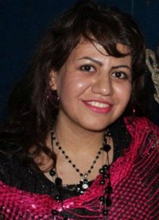

|
|
پیام تسلیت 350 تن از فعالان مدنی، جنبش زنان و وبلاگ نویسان به مادر و برادر بهاره علوی
دو شنبه12 اردیبهشت 1390
تغییر برای برابری ـ همزمان با هفتمین روز درگذشت بهاره علوی، دوست و همراه کمپینیمان 350 تن از فعالان مدنی، جنبش زنان و وبلاگ نویسان پیام تسلیتی خطاب به مادر و برادر بهاره ارسال کردند که متن آن در پی میآید.

تسلیت جمعی از فعالان مدنی، جنبش زنان و وبلاگ نویسان به خانواده علوی:
نام و یاد بهاره را تا همیشهی همیشه زنده نگاه خواهیم داشت
نسرین خانم و دیاکوی عزیز
کوچ غمانگیز کاک هادی و بهاره عزیز را به شما تسلیت میگوییم و برایتان صبری زیاد در تحمل این مصیبت بزرگ آرزو میکنیم. به راستی فقدان این دو انسان شریف و نازنین به ویژه بهاره که در طول سالهای وبلاگ نویسی و فعالیتش در کمپین یک میلیون امضا افتخار آشنایی و دوستی با او را داشتهایم برای ما نیز همچون شما بسیار سخت و تلخ است.
بهاره با وجود سن کم و عمر کوتاهش به عنوان یک فمینیست فعالیت بسیار گستردهای در جنبش زنان داشت و از طریق وبلاگ نویسی، جمع آوری امضا، شرکت در کارگاهها و انجام کار میدانی در روستاهای کردستان برای شکستن تابوهای جنسیتی، تغییر قوانین تبعیض آمیز، مقابله با خشونت علیه زنان و ناقص سازی جنسی دختران تلاشهای قابل تقدیری داشته است.
ما همفکران و همراهان بهاره نام و یاد او را در اندیشیدن به افکار انسان دوستانه و برابری خواهانهاش و پیمودن راهی که او برای رسیدن به آرمانهای خود برگزیده بود، تا همیشهی همیشه زنده نگاه خواهیم داشت و از شما هم میخواهیم تا مقاومت و روحیهی قوی بهاره حتی در بستر بیماری را همچون میراثی ارزشمند در وجود خود حفظ کنید تا بهاره و پدرش از ما و شما راضی باشند.
نسرین خانم و دیاکوی عزیز، درد فراق عزیزانتان آنچنان سنگین است که هیچ واژهایی برای تسکین آن نمییابیم، اما از شما میخواهیم تا داغ دل خود را در همدلی با خانوادهها و مادران داغدار این سرزمین به اشتراک بگذارید و ما را نیز در غم خود شریک بدانید، شاید این همدلیها و همدردیها کمی از سنگینی این مصیبت بکاهد.
آذر کفائی / آذرخش صادق زاده / آرام ابراهیم خاص / آرز اندریاری / آرش نصیری اقبالی / آریس فتاحی/ آزاد خلیفهزاده / آزاد مراديان / آزاد نمکی / آزاده اسدی / آزاده ثبوت / آزاده خسروشاهی / آزاده دواچی / آزاده فرامرزیها / آزاده نصیری / آسو صالح / آسیه امینی / آمنه زمانی / آمنه شیرافکن / آينده آزاد / آیدا ابروفراخ / آیدا سعادت / آیدا قجر / اجلال قوامی / احسان نادرپور / احمد اسکندری / احمد اقبالی قهیازی / اردوان روزبه / اشکان مسیبیان / اشکان منفرد / اصغر برزو / افروز مغزی / المیرا شبانی / الهام قیطانچی / الهه امینی / الهه شکرایی / الهه مشایخی / امرالله ابراهیمی / اميد كوهى / امید تقی زاده / امیر رشیدی / اندیشه جعفری / انسيه سلمانی / اویس اخوان / بشیر امیرخانی / بلال مرادویسی / بنفشه جمالی / بهاره بهروان / بهرام اسماعیل بیگی / بهزاد بلور / بهزاد دلشاد / بهزاد کردستانی / بهناز مهرانی / بهنام امینی / بهنام سازگار / بيان محمدی / پردیس درخشنده / پروین اردلان / پروین ذبیحی / پریسا کاکائی / پوریا صمیمی / پویا جهاندار / پویا عزیزی / پویا قیامی / پویش عزیزالدین / پیمان قیامی / تانیا احمدی / ترانه امیرتیموری / ثريا فلاح / ثریا ساطوری / جعفر پناهی / جلوه جواهری / جمیله مرادی / جهانبخش رستمی / چیمن حسنی / حامد انصاری / حبیب رستمی / حسام میثاقی / حسن نايب هاشم / حسین شکوری / حسین کیاروستا / حميد مافی / حمید حمیدی / حمیده نظامی / خدیجه مقدم / داود آزادفر / درسا سبحانی / درنا بندری / دلارام علی / دیلان سعیدی / راما هاشمی علیا / رامین امن گستر / رحمان جوانمردی / رحیم همتی / رسول آدینه وند / رضا حموله / رضا هیوا / رضوان مقدم / رها عسگری زاده / روحی شفیعی / روزبه میرچرخچیان / روژین شریفی / روشنک آسترکی / روفیا رمضانعلی / روناک نصیری / رویا حبیبی / رویا صحرائی / رویا طلوعی / رویا کاشفی / ریبین رحمانی / زارا امجدیان / زمان فیلی / زهرا آزاد / زهرا حسینی خو / زهره اسدپور / زهره امین / زویا اسکندریان / ژاکلین هبرت / ژیلا بنی یعقوب / ژیلا گلعنبر / ژینا مدرس گرجی / ساچلی افلاکی / سارا امیرمعافی / سارا محمدی / سارو خلیقی / ساسان امجدی / ساقی لقایی / سامان رحمانی / سامان رسول پور / سامرند فتوحی / ساناز خانلری / سپهر عاطفی / ستاره الیاسی / ستاره هاشمی / ستایش حسن پور / سجاد رضایی منش / سجاد کسایی / سحر سجادی / سروه مرادويسی / سعید جلالی فر / سعید صالح / سعید کلانکی / سلی درویش / سلیم شهری / سلیمان محمدی / سمانه ابولپور / سمانه شاملو / سمانه عابدینی / سمانه موسوی / سمیرا پوراندخت / سمیرا عزیزی / سمیه فرید / سمیه مرادیان / سهیلا وحدتی / سوده راد / سوسن طهماسبی / سولماز ایکدر / سوما فصیحی / سیامند محمدی / سیما حسین زاده / سیما شاه عباسی / شادی صالحی / شادی صدر / شایان وحدتی / شفق رحمانی / شقایق کمالی / شکوفه شادابی / شلیر باپیری / شمزین جهانی / شهاب الدین شیخی / شهرزاد گارسچی / شهلا شفيق / شهلا شفيق / شهلا عبقری / شهلا فروزانفر / شهين محمودی / شورانگیز داداشی / شورش مرادی / شيما فرزادمنش / شیدا جهان بین / شیرین عبادی / شیرین فامیلی / شیوا اولیا / شیوا نوجو / صابر قادری / صباح نصری / صبرا رضایی / صبری بهمنی / صبری نجفی / صفورا الیاسی / طاهر خالدی / طاهره خرمی / طلعت تقی نیا / طیبه اصغر زاده / عارف نادری / عالیه مطلب زاده / عرفان حسن پور / عسل اخوان / عشا مومنی / عفت ماهباز / علی همدانی / علی عبدی / علی قیامی / علی ماهباز / علی مشمولی / علی معینی / فاطمه رضایی / فاطمه کریمی / فتانه صادقی / فراصت ناصری / فرح شیلاندری / فرخنده احتسابیان / فرشاد دوستی پور / فرشته شيرازي / فرشته فراهانی / فرشته قاضی / فرشید آذرنیوش / فرناز کمالی / فرهاد طالبیان / فریبا داودی مهاجر / فریده عبادی / فهیمه خضرحیدری / فیروزه مهاجر / کامران تکوک / کامیل احمدی / کاوه آهنگری / کاوه رضائی شیراز / کاوه قریشی / کاوه کرمانشاهی / کاوه مظفری / کورش سلیمی / کوهیار گودرزی / کیانا کریمی / گلاله بهرامی / گلچهر گلسرخی / لیدا حسینی نژاد / لیلا اسدی / لیلا قاسمی / لیلا محمدیان / لیلی حسن پور / محبوبه حسین زاده / محبوبه عباسقلی زاده / محسن حاجیمیر / محسن کاکارشمحمد اسماعیلی / محمد امین گنبدی پور / محمد ایزدی / محمد باقر صمیمی / محمد جمشیدی / محمد جواد طواف / محمد شوراب / محمد محمدی / محمدتوفیق اسدی / محمدرضا اسکندری / محمدرضا حميدى / محمود ملکی / مرسده هاشمی / مرضیه آریان فر / مرضیه بخشی زاده / مرضیه شکیبا / مريم زندی / مریم اهری / مریم بهرمن / مریم حسین خواه / مریم حکمت شعار / مریم رحمانی / مریم شفیع پور / مریم نایب یزدی / مژده علی مردانی / مژگان ثروتی / مسعود چناسی / معصومه زمانی / منوچهر محمدی / منیره کاظمی / مهدی شیرین زاده / مهران میرعبدالباقی / مهرداد باران / مهرداد توحیدی / مهرداد دشتیان / مهرشاد آزاد / مهرنوش اعتمادی / مهسا صارمی / مهسا نصراللهی / مهشید راستی / مهوش زمانی / مهین خدایاری / مهین شکرالله پور / ميثم گودرزی / میثم بیگ محمدی / میدیا بایزیدپور / میلاد فدایی اصل / مینا جعفری / مینا کهریزی / مینا لبادی / نادیا نعمتی / نادیه نعمتی / نازنین گلبان / ناصح فریدی / ناهید جعفری / ناهید خیرابی / ناهید عسگری / ناهید فرشی / ناهید کشاورز / ناهید مکری / ناهید میرحاج / نبی فتاحی / نجات بهرامی / نجيبه اسدپور / ندا شهبازی / نرگس امینی / نریمان زرتشتیان / نریمان مصطفوی / نسرین افضلی / نسرین حمیدی / نسیم خسروی / نسیم سرابندی / نسیم سلطان بیگی / نغمه عالی / نفیسه آزاد / نگار انسان / نگار سمک نژاد / نگار فخار / نگین شیخ الاسلامی وطنی / نوشین کشاورزنیا / نوید خانجانی / نوید محبی / نیکا نصیری / نیکزاد زنگنه / نیکو طاهری / نیلوفر انسان / نیما انصاری / هانا دارابی / هایده تابش / هدا امینیان / هنگامه هرمزان / هوشنگ عباسپور / هیمن سیدی / هیوا محمدی / وجیهه مقدم / وهاب دوستی / یازان اکبری / یاسر گلی / یاسر مختاری / یاور خسروشاهی / یوسف پاوهای